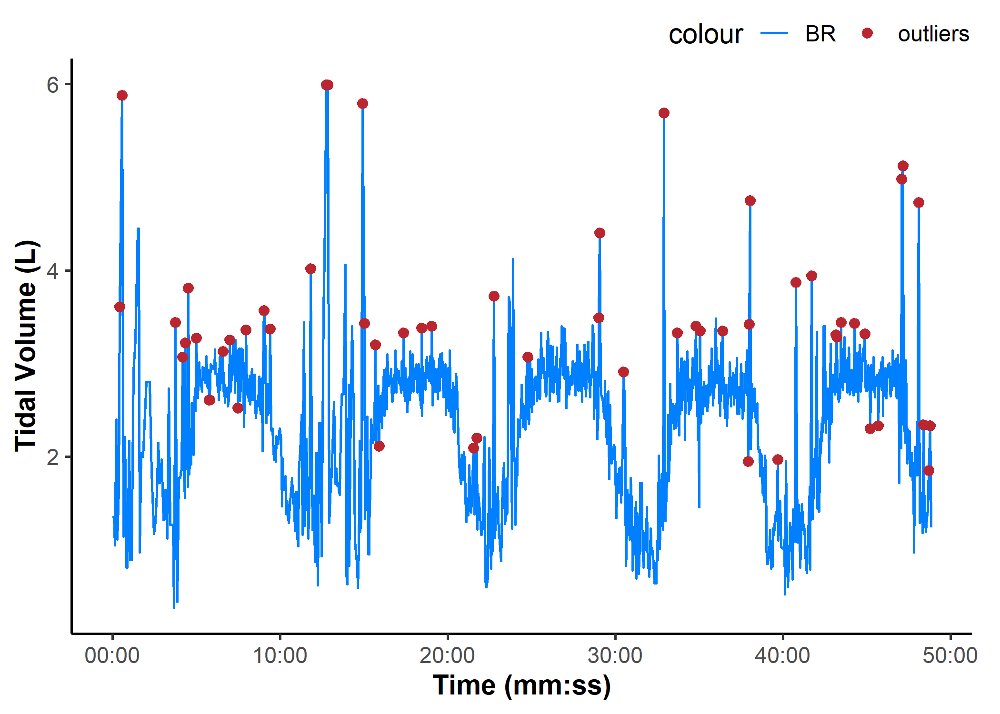
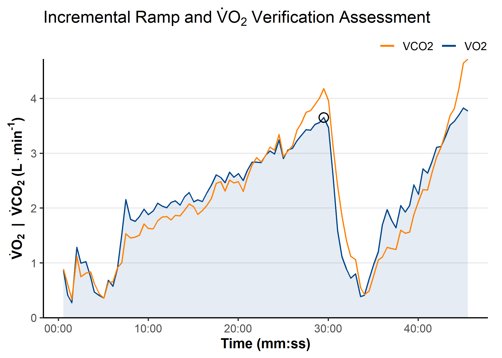
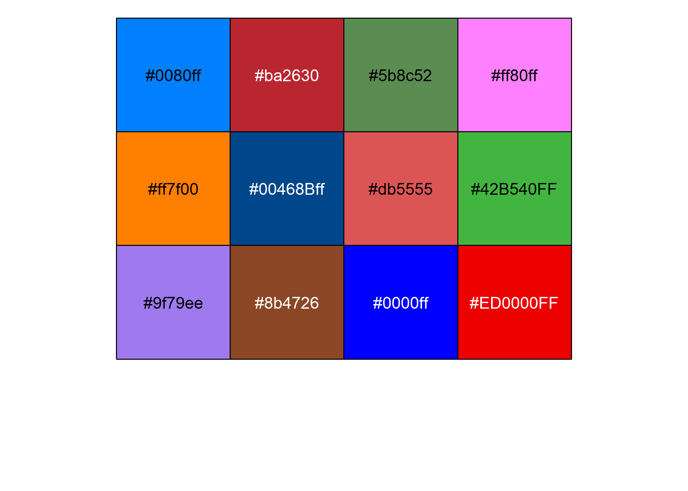

{epl} is a repository of functions and scripts for common tasks for use by students in the UBC Environmental Physiology Laboratory.
Website
For more information and vignettes on usage, please visit the package website.
Online App
A rudimentary “no-code” implementation of some of the {epl} functions are available as a Shiny app to read, clean, plot, and download Parvo metabolic data.
Installation
You can install the development version of {epl} from GitHub with:
## install.packages("remotes")
remotes::install_github("jemarnold/epl")Usage
library(tidyr, warn.conflicts = FALSE)
library(dplyr, warn.conflicts = FALSE)
library(ggplot2)
library(epl)
theme_set(theme_epl())
example_epl()
This helper function can be used to retrieve example data files included in {epl} to test processing functions.
example_epl()
#> [1] "parvo_binned.CSV" "parvo_bxb.CSV" "tymewear_live.csv"
#> [4] "tymewear_post.csv"
example_epl("parvo_binned")
#> [1] "C:/Program Files/R/R-4.5.1/library/epl/extdata/tymewear_live.csv"
read_parvo()
parvo <- read_parvo(example_epl("parvo_binned"), add_timestamp = TRUE)
parvo
#> $data
#> # A tibble: 179 × 26
#> TIME timestamp HR VO2kg VO2 VCO2 RER RR Vt VE
#> <dbl> <dttm> <dbl> <dbl> <dbl> <dbl> <dbl> <dbl> <dbl> <dbl>
#> 1 18.1 2025-10-23 10:50:23 0 5.69 0.404 0.419 1.04 13.3 1.11 12.1
#> 2 31.5 2025-10-23 10:50:36 0 6.80 0.483 0.484 1.00 17.8 0.993 14.5
#> 3 49.5 2025-10-23 10:50:54 107 6.08 0.432 0.448 1.04 10.0 1.66 13.6
#> 4 62.5 2025-10-23 10:51:07 107 4.06 0.288 0.321 1.11 13.8 0.816 9.27
#> 5 77.5 2025-10-23 10:51:22 107 8.61 0.611 0.648 1.06 16.0 1.28 16.8
#> 6 94.9 2025-10-23 10:51:39 107 7.52 0.534 0.528 0.990 13.8 1.15 13.0
#> 7 107. 2025-10-23 10:51:51 107 6.80 0.483 0.514 1.06 15.0 1.10 13.6
#> 8 123. 2025-10-23 10:52:08 107 5.94 0.422 0.454 1.08 11.2 1.33 12.2
#> 9 138. 2025-10-23 10:52:23 107 2.47 0.175 0.186 1.06 16.0 0.392 5.13
#> 10 153. 2025-10-23 10:52:37 107 3.92 0.278 0.294 1.06 12.1 0.845 8.42
#> # ℹ 169 more rows
#> # ℹ 16 more variables: VEVO2 <dbl>, VEVCO2 <dbl>, FEO2 <dbl>, FECO2 <dbl>,
#> # FATmin <dbl>, CHOmin <dbl>, Breath <dbl>, FatOx <dbl>, CarbOx <dbl>,
#> # O2kJ <dbl>, O2kcal <dbl>, O2work <dbl>, O2energy <dbl>, O2power <dbl>,
#> # O2pulse <dbl>, METS <dbl>
#>
#> $details
#> # A tibble: 1 × 16
#> Date Name Sex Age Height Weight `Insp. temp` `Baro. pressure`
#> <chr> <chr> <chr> <dbl> <dbl> <dbl> <dbl> <dbl>
#> 1 2025-10-23 10:5… TW02 Male 0 176 71 23.6 755.
#> # ℹ 8 more variables: `Insp. humidity` <dbl>, `STPD to BTPS` <dbl>,
#> # `O2 Gain` <dbl>, `CO2 Gain` <dbl>, `Base O2` <dbl>, `Base CO2` <dbl>,
#> # `Measured O2` <dbl>, `Measured CO2` <dbl>
#>
#> $events
#> # A tibble: 23 × 2
#> TIME Events
#> <dbl> <chr>
#> 1 240 Start Exercise
#> 2 240 UP1 265W
#> 3 540 Stop Exercise
#> 4 540 Cadence 95
#> 5 900 Start Exercise
#> 6 900 RP2 265W
#> 7 1200 Stop Exercise
#> 8 1200 RPE 6-20 15
#> 9 1200 Cadence 95
#> 10 1440 Start Exercise
#> # ℹ 13 more rows
read_tymewear()
tymelive <- read_tymewear(example_epl("tymewear_live"))
tymelive
#> $data
#> # A tibble: 1,083 × 5
#> time timestamp br vt ve
#> <dbl> <dttm> <dbl> <dbl> <dbl>
#> 1 0 2025-10-23 10:50:11 12.7 1.35 17
#> 2 4.14 2025-10-23 10:50:15 14.9 1.35 20
#> 3 7.95 2025-10-23 10:50:18 15 1.05 16
#> 4 13.0 2025-10-23 10:50:24 13.8 2.4 33
#> 5 17.2 2025-10-23 10:50:28 13.3 1.11 15
#> 6 21.2 2025-10-23 10:50:32 12.8 1.63 21
#> 7 25.7 2025-10-23 10:50:36 13 3.61 47
#> 8 33.9 2025-10-23 10:50:44 11.9 5.88 70
#> 9 39.3 2025-10-23 10:50:50 8 1.14 9
#> 10 44.7 2025-10-23 10:50:55 10 2.21 22
#> # ℹ 1,073 more rows
#>
#> $details
#> # A tibble: 60 × 2
#> parameter value
#> <chr> <chr>
#> 1 Info Section ""
#> 2 type "0"
#> 3 stages "[]"
#> 4 gender "Male"
#> 5 weight "71.0"
#> 6 weight_units "SI"
#> 7 activity-name "TW02"
#> 8 f_v "1.0"
#> 9 activity-type "0"
#> 10 sport "2"
#> # ℹ 50 more rows
replace_outliers()
tyme_data <- tymelive$data
vt_filtered <- replace_outliers(tyme_data$vt, width = 7, method = "median")
ggplot(tyme_data) +
aes(x = time, y = vt) +
ylab("Tidal Volume (L)") +
scale_x_continuous(
name = "Time (mm:ss)",
breaks = breaks_timespan(),
labels = format_hmmss
) +
scale_colour_epl() +
geom_line(aes(colour = "BR")) +
geom_point(
data = slice(tyme_data, which(vt_filtered != vt)),
aes(y = vt, colour = "outliers")
)
find_peaks()
ramp_data <- read_parvo(example_epl("parvo_ramp"))$data
peak_data <- find_peaks(
ramp_data,
x = "TIME",
y = "VO2",
span = 30,
between = c(1500, 2000)
)
peak_data
#> # A tibble: 1 × 25
#> samples TIME HR VO2kg VO2 VCO2 RER RR Vt VE VEVO2 VEVCO2
#> <int> <dbl> <dbl> <dbl> <dbl> <dbl> <dbl> <dbl> <dbl> <dbl> <dbl> <dbl>
#> 1 1 1770. 222 49.9 3.65 4.18 1.14 46.7 2.88 110. 36.8 32.1
#> # ℹ 13 more variables: FEO2 <dbl>, FECO2 <dbl>, FATmin <dbl>, CHOmin <dbl>,
#> # FatOx <dbl>, CarbOx <dbl>, O2kJ <dbl>, O2kcal <dbl>, O2work <dbl>,
#> # O2energy <dbl>, O2power <dbl>, O2pulse <dbl>, METS <dbl>
VO2peak <- peak_data$VO2kg
VO2peak
#> [1] 49.94765
theme_epl() & custom {ggplot2} plotting functions
ggplot(ramp_data) +
aes(x = TIME) +
labs(title = expression(
Incremental~Ramp~and~dot(V)*O['2']~Verification~Assessment
)) +
coord_cartesian(ylim = c(0, NA)) +
theme(
panel.grid.major.y = element_line()
) +
scale_x_continuous(
name = "Time (mm:ss)",
breaks = breaks_timespan(),
labels = format_hmmss
) +
scale_y_continuous(
name = expression(bold(
dot(V)*O['2']~~'|'~~dot(V)*CO['2']~'('*L%.%min^'-1'*')'
)),
expand = expansion(mult = 0)
) +
scale_colour_manual(
name = NULL,
aesthetics = c("colour", "fill"),
values = setNames(palette_epl()[c(6, 5)], c("VO2", "VCO2")),
) +
guides(
colour = guide_legend(override.aes = list(
linewidth = 1, alpha = 1
))
) +
geom_area(aes(y = VO2, colour = "VO2", fill = "VO2"),
alpha = 0.1, key_glyph = "path") +
geom_line(aes(y = VCO2, colour = "VCO2")) +
geom_point(data = peak_data, aes(x = TIME, y = VO2),
size = 4, shape = 21, stroke = 1)
scales::show_col(palette_epl())
To do (as of 0.2.0)
Add digital filtering methods (e.g. Butterworth, smoothing spline, simple moving average, binning).
Update EPL Parvo App.
Create vignette for main package usage.
Update
read_tymewear()method for “tymepost” export file type.Add 4-parameter monoexponential curve fitting via
nls()self-starting functions.Add mean peak value detection, i.e. for V̇O2peak.Add template display theme forggplot2plotting.Add local outlier filtering for metabolic data.